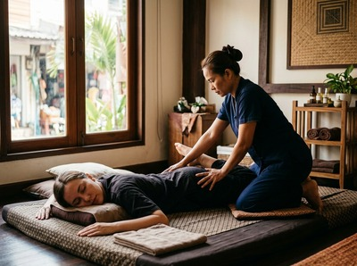

★★★★★ Quality gate failures: ctas. Review and edit before removing this notice. ★★★★★
If you've ever tried to book a massage and found yourself staring at a list of options wondering what the difference actually is, you're not alone.
Thai massage and Swedish massage are two of the most popular styles in the world, and they couldn't be more different in how they work, what they feel like, and what they're best suited for.
Understanding those differences isn't just useful trivia. It can genuinely help you get more out of your next session.
Traditional Thai massage has roots going back over 2,500 years, developed in Thailand as part of a broader system of traditional medicine. It draws on Ayurvedic principles and Buddhist healing traditions, working along the body's sen energy lines — a network of pathways through which life force is believed to flow.
The style taught at Wat Pho in Bangkok, the same school where Glasgow Thai Massage founder Maliwan trained, is considered one of the most authentic lineages still practised today.

Swedish massage is a much younger technique, developed in Europe in the 19th century and widely credited to Swedish physiologist Per Henrik Ling. It was designed around Western anatomical principles: muscle groups, blood flow, and the nervous system.
It became the foundation for most spa and relaxation massage as we know it in the West.
This is where the two styles diverge most sharply. In a traditional Thai massage, you stay fully clothed throughout. There are no oils.
The therapist uses their hands, thumbs, elbows, knees, and feet to apply acupressure along the sen lines, combined with assisted stretching and joint mobilisation that moves your body through a series of yoga-like positions. Some people call it "lazy yoga," and the description isn't far off.
Swedish massage works quite differently. You undress to your comfort level, lie on a table, and the therapist applies oil or lotion to the skin and uses long gliding strokes, kneading, and circular movements across the muscle groups.
The focus is on the surface layers of muscle and on promoting blood flow and relaxation. It's gentler and more passive — you don't need to move at all.
Thai massage is active and engaging. You'll be guided through stretches, turned onto your side, have your limbs lifted and extended. It can feel intense at times, particularly around tight areas of the hips, lower back, or shoulders.
Most people leave feeling looser and lighter, with noticeably improved range of motion. The energy can be surprisingly invigorating rather than sleepy.
Swedish massage is the opposite in feel. It's deeply calming, designed to switch off the nervous system and let the body settle. The rhythm of the strokes is deliberately slow and repetitive.
Most people find it easier to drift off during a Swedish session. You leave feeling relaxed and unhurried, rather than refreshed and mobilised. Neither is better — they're suited to different things.
Thai massage tends to suit people dealing with stiffness, restricted movement, postural issues from desk work, or sports-related tightness. The assisted stretching makes it particularly effective for improving flexibility and releasing deep muscle tension that doesn't respond well to surface work.
At Glasgow Thai Massage, we regularly see clients who come in with chronic neck and shoulder tension from long hours at a computer. The combination of acupressure and stretch reaches areas that Swedish technique simply cannot access.
If you're interested in exploring that kind of targeted bodywork, book your session online today and we'll match you with the right treatment. For sports recovery specifically, our Thai sports massage is worth a look.
Swedish massage works best when the primary goal is stress relief, general relaxation, or mild muscle tension. It's also a good starting point for anyone new to massage who isn't sure what to expect — there are no surprise positions or deep pressure points.
If you want the benefits of oil work alongside Thai therapeutic technique, Thai oil massage offers a genuinely useful middle ground between the two styles.
Thai massage can be firmer, but it's not about causing pain. A skilled therapist reads the body and adjusts accordingly. The pressure should feel purposeful, not punishing.
Communicate with your therapist throughout, especially if something feels too intense.
Swedish massage is generally lighter and more predictable in pressure. If you're sensitive to deep work, recovering from illness, or simply want something gentle, Swedish is the more comfortable option.
Both styles have real, documented benefits for the body and mind. The choice comes down to what you're walking in with and what you want to walk out feeling.
If you're still unsure, it's always worth having a conversation with your therapist before the session starts. At Glasgow Thai Massage, on Floor 3 of Victoria Chambers on West Nile Street, that's exactly the kind of conversation we welcome. Call us now to arrange your visit and we'll help you find the right fit.
The key difference is in technique and experience. Thai massage is performed fully clothed, uses no oils, and combines acupressure along the body's sen energy lines with assisted stretching and joint mobilisation. Swedish massage uses oil or lotion on bare skin and focuses on long, flowing strokes and kneading to promote relaxation and improve circulation. Thai massage tends to be more active and invigorating; Swedish massage is gentler and more deeply calming.
Both can help with back pain, but in different ways. Thai massage addresses restricted movement and deep muscle tension through stretching and acupressure, making it particularly effective for chronic tightness, postural issues, and lower back stiffness. Swedish massage provides relief through improved circulation and surface muscle relaxation. For persistent or specific back pain, Thai massage or deep tissue work is usually the more targeted option.
Not at all, as long as you communicate with your therapist. A good practitioner will always adjust pressure and range of motion to suit your body and comfort level. Many first-timers at Glasgow Thai Massage are pleasantly surprised by how manageable the experience is. If you're uncertain, let the therapist know before the session — that conversation shapes the whole treatment.
Yes. Thai oil massage is a popular option that blends therapeutic Thai techniques with the use of warmed oils, offering a treatment that's both deeply relaxing and physically effective. It's a good choice if you're drawn to the benefits of Swedish massage but want the deeper stretch and energy line work that characterises traditional Thai practice.
It depends on your goals. For general stress management and relaxation, once or twice a month is a sustainable and effective rhythm. If you're addressing chronic tension, postural problems, or sports recovery, more frequent sessions in the short term — weekly or fortnightly — tend to produce better results. Your therapist can advise you on what makes sense for your specific situation.